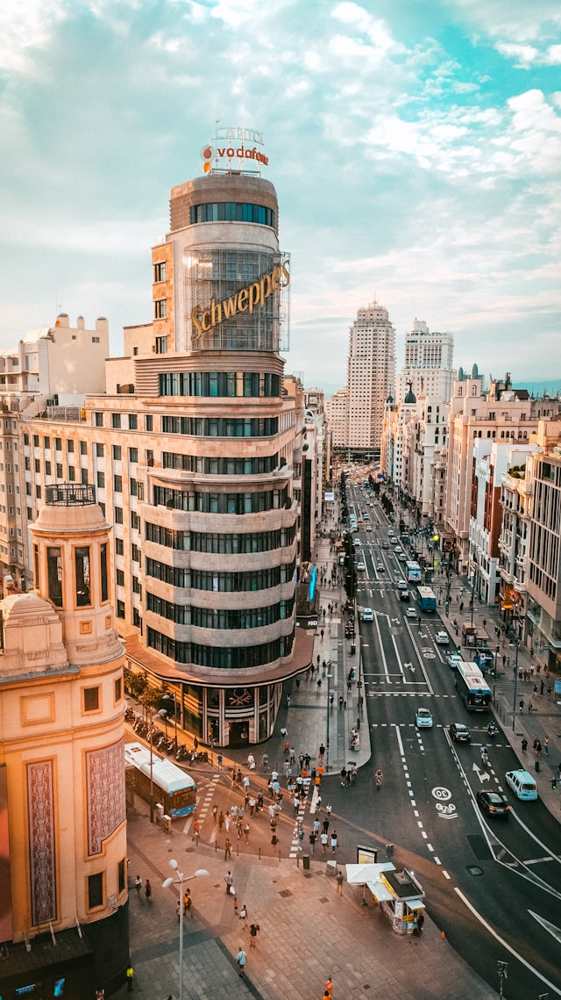

Madrid

{kind=link}
{kind=link}
{kind=link}
{kind=link}
Nuestra primera parada será Madrid, ideal para una escapada de fin de semana. Llegamos un viernes por la tarde y decidimos alojarnos en un hotel cerca de la Gran Vía, una zona perfecta para moverse a pie por el centro. Esa primera noche la dedicamos a pasear entre las luces de la ciudad, con una parada obligada en la Plaza Mayor y la Puerta del Sol. Para cenar, elegimos una taberna en el barrio de Las Letras llamada Casa González, donde probamos unas croquetas caseras y un vermut madrileño que recomendamos totalmente por su ambiente tradicional.
El sábado lo reservamos para el turismo cultural. Empezamos por el Museo del Prado, una visita imprescindible si te interesa el arte clásico. Conviene comprar las entradas online para evitar colas. A mediodía, cruzamos hacia el Parque del Retiro, un lugar perfecto para relajarse, alquilar una barca en el estanque (coste aproximado de 8 € por 45 minutos) y disfrutar del entorno. Desde allí se puede caminar hasta la Puerta de Alcalá y la Fuente de Cibeles, dos de los iconos más fotografiados de la ciudad.
Por la tarde, exploramos el barrio de Malasaña, conocido por su ambiente joven y alternativo. Hay muchas cafeterías con encanto y tiendas vintage, ideales para una pausa tranquila. Nos detuvimos en “Toma Café”, uno de los locales más recomendados de la zona. Al caer la tarde, subimos al mirador del Círculo de Bellas Artes (entrada: 5 €) para ver la puesta de sol. La vista panorámica de Madrid desde las alturas fue, sin duda, uno de los mejores momentos del viaje.
El domingo lo dedicamos al Rastro, el famoso mercadillo al aire libre que se celebra cada semana en el barrio de La Latina. Es perfecto para los amantes de las antigüedades y los recuerdos curiosos. Allí compramos un pequeño marco de madera que ahora tenemos en casa como recuerdo del viaje. Antes de marcharnos, comimos en Juana La Loca, un bar de tapas moderno muy conocido por su tortilla de patatas con cebolla caramelizada.
Madrid nos sorprendió por su energía, su historia y su gastronomía. Es una ciudad que combina perfectamente la tradición con la modernidad, ideal tanto para una escapada romántica como para descubrirla en solitario. Sin duda, volveremos para seguir explorando sus barrios y rincones menos conocidos.
A continuación os dejamos un video sobre lugares a los que debéis ir si visitais Madrid. ¡Nos vemos en la próxima parada!